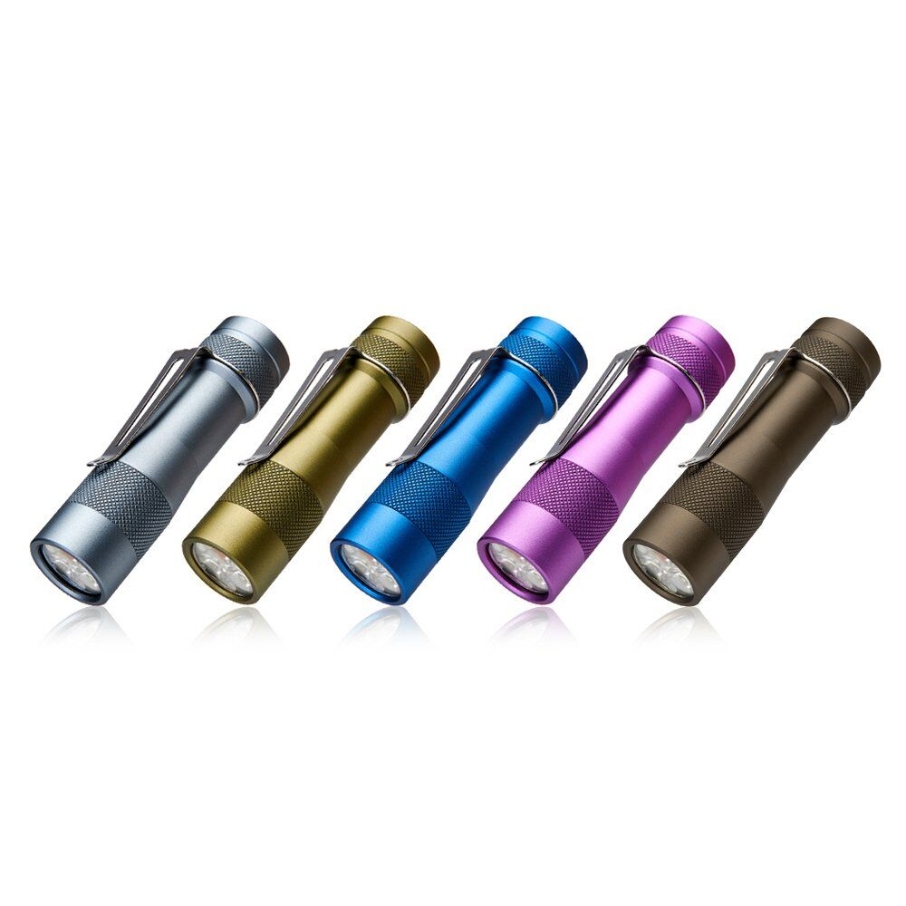

Lumintop FW3A Review — The Community-Designed Anduril 18650
A 2019 cult favorite that the flashlight community literally designed on BLF — Anduril UI in a 92.5mm body, with QC sensitivity that the community absorbed.
⚠️ Discontinued: Lumintop officially discontinued the FW3A, FW3A Copper, and FW3A Titanium variants per their official product page. In 2026 you're buying used or NOS stock, potentially above original retail pricing, with no warranty path. This is a collector / enthusiast purchase — not a recommended "buy new and maintain" EDC. Read the QC notes in this review carefully before purchasing used.

Image: Lumintop FW3A via Lumintop official FW3A product page (manufacturer CDN, downloaded for local hosting). Cropped/sized for review use under fair-use review/commentary.
Affiliate disclosure: As an Amazon Associate I earn from qualifying purchases. The Buy links at the bottom of this review are Amazon product links — once the Amazon Associates application for this site is approved, an affiliate tag will be inserted into each link. This review is not sponsored.
TL;DR
Verdict: A 2019 cult flashlight that the BLF community literally designed — including the firmware (Anduril, written by BLF member ToyKeeper). 1Lumen measured 2913 lm at 0s and 18,500 cd — significantly above Lumintop's 10,000 cd claim. The community made a flashlight, and it over-delivered on its own specs.
Best for: Anduril enthusiasts who want the historical original, collectors of compact-body 18650 lights, modders who appreciate the no-glue construction. Also the rare case where buying a discontinued product is a feature, not a bug — the FW3A is a fixed point in flashlight history.
Skip if: You're a casual buyer who doesn't want to troubleshoot (early QC was real), you need warranty/support (discontinued, no path), you want Anduril 2's latest features (FW3A shipped with original Anduril), or you want onboard charging (none).
What you need to buy together: Unprotected flat-top 18650 (Samsung 30Q is the community standard), external 18650 charger (no onboard charging exists). Avoid protected button-top cells — body length constraints mean most won't fit reliably.
3× CREE XP-L HI (standard); Nichia 219C or Luminus SST-20 in alternate SKUs
Triple-emitter setup behind a Carclo 10511 TIR matte optic. Beam is wide flood; not a thrower despite the candela measurement.
Max output
2800 lm
1Lumen measured 2913 lm at 0s — slightly over-performs the spec. Sustained regulated output ~813 lm after thermal stepdown.
Candela
10,000 cd (claimed)
1Lumen measured 18,500 cd — almost 2× the manufacturer claim. Calculated throw ~272 m from that measurement. This is the rare case where the spec sheet under-claims rather than over-claims.
Battery
1× 18650 (flat-top unprotected, ~65mm)
Cell not included. Protected cells generally don't fit due to inner-tube body length constraints. Standard flat-top unprotected only: Samsung 30Q, Sony VTC6, Molicel P28A. Driver pulls ~10A+ at turbo — high-drain cells required.
IP rating
Manufacturer-stated: "equivalent to IPX8"
Rated for immersion. Community practice: treat with reasonable care; the TIR optic interface and glue-free construction mean real-world sealing depends on o-ring condition. Not designed for deliberate immersion in the same way as a purpose-built dive light.
Weight
53 g (without cell)
~98-101 g with Samsung 30Q or VTC6 installed. Aluminum standard; copper and titanium variants exist (also discontinued).
Length × diameter
92.5 mm × 25.4 mm head
The defining spec. An 18650 light in a body barely larger than the cell itself. At launch this was record-class compact for an 18650 light.
Charging
None — external charger required
No onboard charging. Plan for a bay charger (Nitecore SC4, Xtar VC4S, similar) and unprotected flat-top cell support.
UI
Anduril (original, not Anduril 2)
ToyKeeper (BLF member Selene Scriven) wrote the firmware specifically for this and related community lights. Open-source GPL v3. Includes ramp mode, stepped modes, lockout, momentary, muggle mode, battery check, sunset mode. Some units may have received firmware updates; many shipped with the original Anduril build.
Switch
Electronic tail switch (e-switch)
Mode access from off via clicks; full Anduril feature set accessed through click patterns.
Pocket clip
Included
One advantage over the Convoy S2+ (clip sold separately). The included clip is functional for jeans front pocket carry.
Construction
No adhesive used — designed for disassembly
Community request honored by Lumintop. Standard 16mm MCPCB sizing allows emitter swaps with normal modding skill. Inner tube design adds complexity vs the Convoy S2+.
Price
Used / NOS market — varies significantly
Original retail was budget-tier (Lumintop is discontinued — Amazon-listed pricing is set by third-party resellers). Current pricing depends on body material (aluminum cheapest, copper and titanium NOS premium) and condition. No new-from-Lumintop path remains.
Site-generated infographic (HTML→PNG, EDC Lumen Log original; shared cell-compat reference reused from the IF25A review for cross-link consistency). The FW3A requires flat-top unprotected 18650 cells (~65mm length). The inner-tube body design means protected button-top cells often exceed the length constraint and don't make reliable contact. Community standards: Samsung 30Q, Sony VTC6, Molicel P28A — all high-drain (light pulls ~10A+ at turbo). Do NOT use protected cells; check fit before buying. Avoid 9800 mAh / Ultrafire counterfeits — Li-ion chemistry caps 18650 capacity at ~3500 mAh. Cell-spec data sources: manufacturer datasheets + LiquidRetro 2019 review confirming length constraint + BLF FW3A battery configuration thread.
4-axis rating
Build
3/5
QC was the FW3A's documented Achilles heel on early units — inner tube seating, the "nubbin" component falling out, factory-uncalibrated thermal sensor. Second-batch units addressed some of this. Hardware quality otherwise is community-praised; the inner tube design is part of what makes the 92.5mm body possible.
Runtime
3/5
Turbo is a 20-second burst before thermal stepdown — physics-bound with 53g of body mass and 3 LEDs. Regulated sustained output ~813 lm. Community use pattern is burst-then-dim. Long-duration high-output requires a larger 21700 light (IF25A, PD36R Pro).
Pocketability
5/5
92.5mm × 25.4mm head, 53g empty. Almost 18350 dimensions with 18650 runtime. Included clip. At launch and still in 2026 there's no obvious direct replacement for the form factor + Anduril combination.
Value
3/5
Used/NOS pricing varies significantly by body material and condition. Aluminum at original retail was excellent value in 2019; titanium NOS pricing today is premium-tier and oriented at collectors. No warranty path inflates real cost.
92.5mm body holding an 18650 cell: At launch in 2019 this was record-class compact for an 18650 light. Even in 2026 with newer alternatives, the FW3A's dimensions are unusual — 18350 territory with 18650 runtime. The included clip makes it genuinely pocketable.
Anduril UI at the era Anduril was new: Original Anduril by ToyKeeper. Ramping, stepped modes, lockout, momentary, muggle mode, battery check — features that commercial lights from major brands didn't offer at any price point in 2019. The historical significance gives the FW3A a permanent place in the community's memory.
The community designed this light — and Lumintop delivered the spec: No-glue construction (community request), Anduril UI (community firmware), 92.5mm body (community engineering constraint). For enthusiasts who often feel ignored by mainstream manufacturers, the FW3A is evidence that enthusiast-driven design can produce real products. That story matters.
Under-claimed candela: 1Lumen measured 18,500 cd vs the 10,000 cd Lumintop claim. In a segment full of inflated specs, a flashlight that significantly out-performs its own marketing is the rare honest exception.
✗ Where it falls short
Discontinued — no warranty, no support, used market only: Lumintop's own product page confirms discontinuation. What you buy in 2026 is used or NOS stock at variable pricing. Buying used requires checking that the seller confirmed the light works before shipping.
QC on early units was real: Multiple independent reviews documented the inner tube seating issues, the "nubbin" component falling out if the tailcap was unscrewed before reading the manual, and the factory-uncalibrated thermal sensor causing spurious stepdowns. Second-batch units addressed some of this — but the FW3A's initial reputation for requiring troubleshooting is documented and real.
Aggressive thermal stepdown: 53g of body mass + 3 LEDs = limited thermal capacity. Turbo is a 20-second burst, not a mode. Anduril's thermal management defaults to 45°C; factory calibration was often inaccurate. For sustained high-output, this is the wrong light.
Flat-top unprotected 18650s only: Inner tube design means protected button-top cells generally don't fit. The market has shifted toward button-top USB-C–charged protected cells since 2019; sourcing appropriate flat-top unprotected cells (Samsung 30Q, Sony VTC6) is still possible but slightly more deliberate. Plan ahead.
"The FW3A is a community flashlight in the most literal sense — BLF members wrote the firmware, the body design, the no-glue construction request. Lumintop manufactured what the community asked for. That story is the reason the cult endures."
★ Community-tracked use report
📅 Long-term FW3A patterns from 1Lumen, LiquidRetro, zakreviews, BLF, and CPF
Daily carry placement: 92.5mm × 25.4mm with included clip places this firmly in jeans front pocket EDC territory. Community members consistently describe it as "the most pocketable 18650 I own." Compact-body 18650 lights with this combination of size + Anduril remain uncommon even in 2026.
QC roulette in practice: Community members who got working units describe high loyalty — "one of the shortest 18650 flashlights I own," "nearly perfect." Members who tried to troubleshoot and gave up exist too. The QC reality split community sentiment in 2019; in 2026, buying used means checking the seller's claims carefully.
Inner tube reseating: BLF threads and LiquidRetro's review document the most common QC fix — reseating the inner tube. Second-batch units added a retaining ring to address this. If you buy used, ask the seller whether the light has been disassembled and if so whether the inner tube was correctly reassembled.
Thermal behavior: 20-second turbo burst before stepdown is consistent across measurement sources. Body becomes "exceptionally hot" on sustained high modes per LiquidRetro. The FW3A is a burst-light by design — use it that way.
Cell sourcing in 2026: Samsung 30Q remains the community standard for the FW3A. Flat-top unprotected, ~65mm length, 10A+ drain rating. Available from Illumn and other community-trusted vendors. Protected cells often won't fit due to the inner tube length constraint.
Compared to alternatives in 2026: For new buyers, the Sofirn SC31 Pro is the closest functional replacement (Anduril 2, USB-C charging, similar form factor with slightly larger body). The Wurkkos TS10 (AAA) and Sofirn IF25A (21700) fill adjacent niches that didn't exist when the FW3A launched. Buying an FW3A in 2026 is a deliberate choice for the historical significance + form factor, accepting the limitations.
Verdict
The Lumintop FW3A is a flashlight community artifact. BLF members designed it, ToyKeeper wrote its firmware, Lumintop manufactured it to community specifications. It launched in 2019 as the realization of a years-long community project. In 2026 it's discontinued, sold as used or NOS, with the QC reality of early production runs intact. For Anduril enthusiasts who want the historical original and the 92.5mm body, this is a deliberate purchase. For new buyers who want compact Anduril 2 18650 EDC in 2026, the Sofirn SC31 Pro is the closest functional replacement at lower cost with current production warranty. The FW3A's case is precise: historical significance + record-class compact 18650 body + the community origin story. Buy it for what it is — a snapshot of what the flashlight community can build when manufacturers listen — not for what current production lights deliver.
🛒 Where to buy
⚠️ Discontinued by Lumintop — all purchases are used or NOS stock. Verify with the seller that the light has been confirmed working before shipping. Aluminum is the practical EDC choice; copper and titanium are collector items at higher pricing.
🇺🇸 Check current Amazon.com (US) availability(Amazon product link — affiliate tag pending approval; verify "in stock" before clicking buy) Aluminum FW3A. NOS / used market — check listing condition carefully. Cell (18650) sold separately.
🌐 Illumn — FW3A Aluminum listing(non-affiliate; check current availability) Illumn has historically stocked FW3A in aluminum. Availability may be intermittent in 2026.
Compatible 18650 cells (FLAT-TOP UNPROTECTED REQUIRED): Samsung 30Q (3000 mAh, 15 A — community standard), Sony VTC6 (3000 mAh, 15 A — also documented), Molicel P28A (2800 mAh, 35 A — overkill but excellent), Sony VTC5A (2600 mAh, 25 A — used when cell length is the primary concern). Protected cells generally won't fit due to the inner-tube body length constraint. Do NOT use Ultrafire / TrustFire / unbranded cells — the FW3A pulls 10A+ at turbo, fake cells will fail dangerously. See the Ultrafire warning post.
You also need: External 18650 charger (Nitecore SC4 / Xtar VC4S / similar) — there is no onboard charging on the FW3A. Plan this into your total cost of ownership.
Affiliate disclosure: The Amazon links above are currently non-affiliate product/search links (Killzone and Illumn direct links are not part of any affiliate program — independent retailers). Once the Amazon Associates application for this site is approved, an affiliate tag will be inserted into the Amazon links. If/when you buy through an affiliate-tagged Amazon link, EDC Lumen Log earns a small commission at no extra cost to you. As an Amazon Associate I earn from qualifying purchases (statement preserved as required by Amazon Program Policies for the participation framework). Reviews are not paid or sponsored — see Methodology. (PR — 景品表示法準拠 / アフィリエイトタグは承認後に挿入)